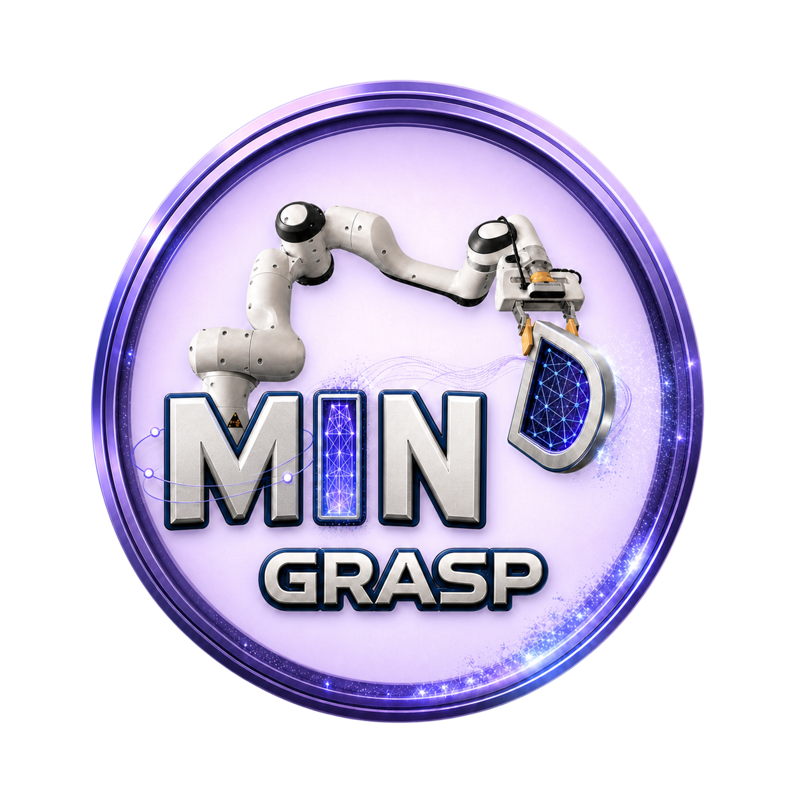
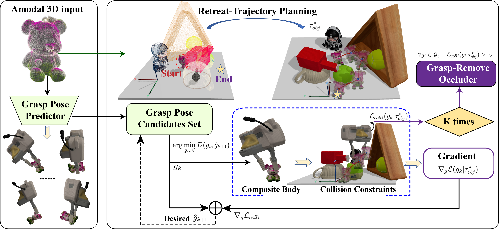

MIND-Grasp
for Occlusion-Aware Grasping





Abstract
Occlusion poses a significant challenge to robotic grasping in cluttered scenes, especially when the target object is completely invisible. Under such full-occlusion conditions, the key difficulty shifts from grasp pose estimation alone to actively discovering the hidden target and ensuring a feasible retreat path. Existing methods mainly focus on partially visible targets, leaving target discovery and safe retreat under full occlusion insufficiently explored. To address this gap, we propose MIND-Grasp, a multiview grasping framework inspired by human-like reasoning in occluded scenes. Given a language instruction and current observations, MIND-Grasp reconstructs an amodal 3D target model and the corresponding target-centric occlusion point cloud. Based on this occlusion cloud, MIND-Grasp performs NBA decision-making: it searches for observable corridors and updates the occlusion cloud in a closed loop, while executing grasp-remove actions only when critical occlusions must be removed. Once the target becomes visible and its geometry is reconstructed, the system further selects grasp poses that satisfy feasible-retreat constraints. Extensive real-world occluded grasping experiments demonstrate that MIND-Grasp handles different levels of occlusion and enables robust target discovery, occlusion removal, and safe grasp execution.
Method Overview
MIND-Grasp follows an imagination-to-discovery-to-retreat pipeline. It first builds an amodal target hypothesis, reasons about target-centric occlusion clouds, then selects the next best action for active discovery and retraction-aware grasping.
Datasets and Benchmarks
Public Benchmarks
Evaluation on LINEMOD Occlusion and GraspNet-1Billion for amodal reconstruction, pose estimation, and grasp prediction under occlusion.
Real Occluded Scenes
Nine cluttered tabletop scenes are used to evaluate target discovery, grasp success, and retraction success under partial and full occlusion.
Qualitative Results
The qualitative results show how MIND-Grasp progressively discovers hidden targets, updates the target-centered occlusion cloud, removes only critical occluders, and finally executes safe target retraction.
Retraction-Aware Grasping Pipeline
Instead of selecting a grasp solely by local grasp quality, MIND-Grasp verifies whether the gripper-target composite body can be safely withdrawn from clutter along a feasible retraction corridor.
Resources
Citation
@inproceedings{anonymous2026mindgrasp,
title = {MIND-Grasp: Multiview Imagination-guided Next-best-action Discovery for Occlusion-Aware Grasping},
author = {Anonymous Authors},
booktitle = {Conference on Robot Learning},
year = {2026}
}